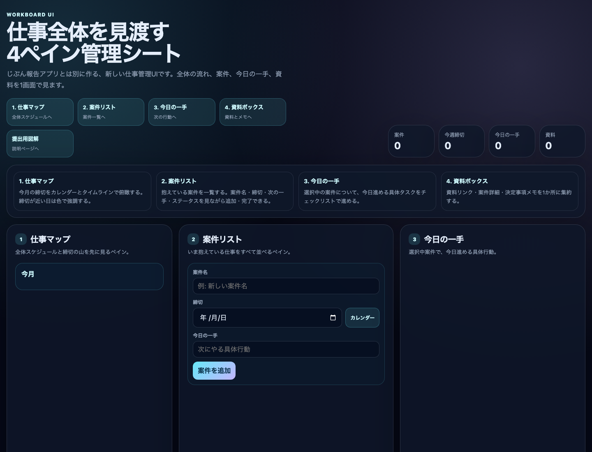

1ツールの画面キャプチャ
実際に動いているワークボード画面の静止キャプチャです。左から、仕事マップ、案件リスト、今日の一手、資料ボックスへ進める構成にしています。

静止画像で画面の見た目を確認できるようにし、下には操作できるライブプレビューも残しています。
AI-DRIVEN SCHOOL SUBMISSION
複数の仕事が同時に進むと、締切、次にやること、資料の場所が散らばって「今なにを進めるべきか」が見えにくくなります。 このUIは、仕事の全体像と今日の一手を同じ画面で確認できる個人用ワークスペースです。
実際に動いているワークボード画面の静止キャプチャです。左から、仕事マップ、案件リスト、今日の一手、資料ボックスへ進める構成にしています。

静止画像で画面の見た目を確認できるようにし、下には操作できるライブプレビューも残しています。
いま抱えている仕事、締切、次にやること、資料リンクを1か所に集めて、どの仕事から進めるべきか迷わない状態にする。
「今日やること」からではなく、左側に仕事マップを置いて、まず全体の締切感が見えるようにしました。
今回は画面の見た目が主役ですが、どこからでも同じ画面を試せるように、案件データはSupabaseに保存する形にしました。
締切はカレンダーボタンから選べるようにし、年号を毎回手入力しなくてよい形にしました。
完了チェックを入れると画面から非表示になり、いま見るべき仕事だけに集中できます。
最初はじぶん報告アプリに組み込みましたが、目的が違うため、別のUIとして作り直しました。
GitHub Pagesは静的公開なので、そのままでは保存できません。Supabaseを組み合わせることで解決しました。
ペイン名を「仕事マップ・案件リスト・今日の一手・資料ボックス」に固定するまで、何度か言葉を調整しました。
4ペインが縦に並んでも移動しやすいよう、上部の説明から各ペインへジャンプできるようにしました。